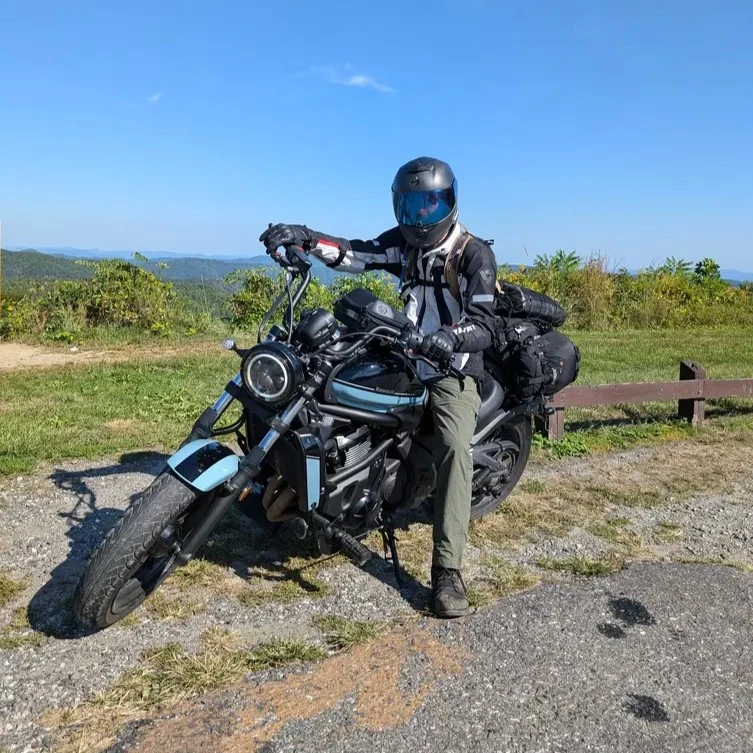

Home
About Me

Hi, I'm Cole. I'm a student at UNC Charlotte with a strong interest in technology and building anything related to tech.
My interests range from computers and web development to photography, videography, and FPV drones. I enjoy developing new skills and turning ideas into something tangible.
Interests
- Photography and videography
- FPV drones and aerial imaging
- Motorcycles and riding
- Web development
- 3D printing and hands-on projects
Projects and Learning
I like working on projects that give me an opportunity to learn something new. This site is one of those projects and will continue to grow as I develop my skills and have more work, experiences, and interests to share.
I'm currently studying front-end web development as part of ITIS 3135 at UNC Charlotte. My coursework for that class is kept separate from this personal website.